Sense-able Scholarly Sensemaking
Ongoing
UIST 2026 demo · Accepted in dissertation proposal
How might researchers explore scholarly ideas through more than reading alone? I developed a mixed reality prototype that represents statements as connected entities and relations. Researchers can assemble hypotheses, inspect related evidence, and encounter oscillation that makes the system’s computed assessment of evidential support perceptible. Reflective prototyping and formative sessions with four researchers shaped a set of provisional design principles for sense-able scholarly work.
Dissertation project
Mixed reality prototype
Research through design
4 formative sessions
Field study proposed
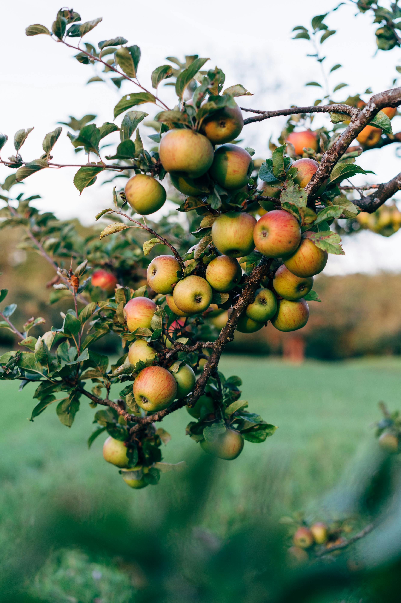
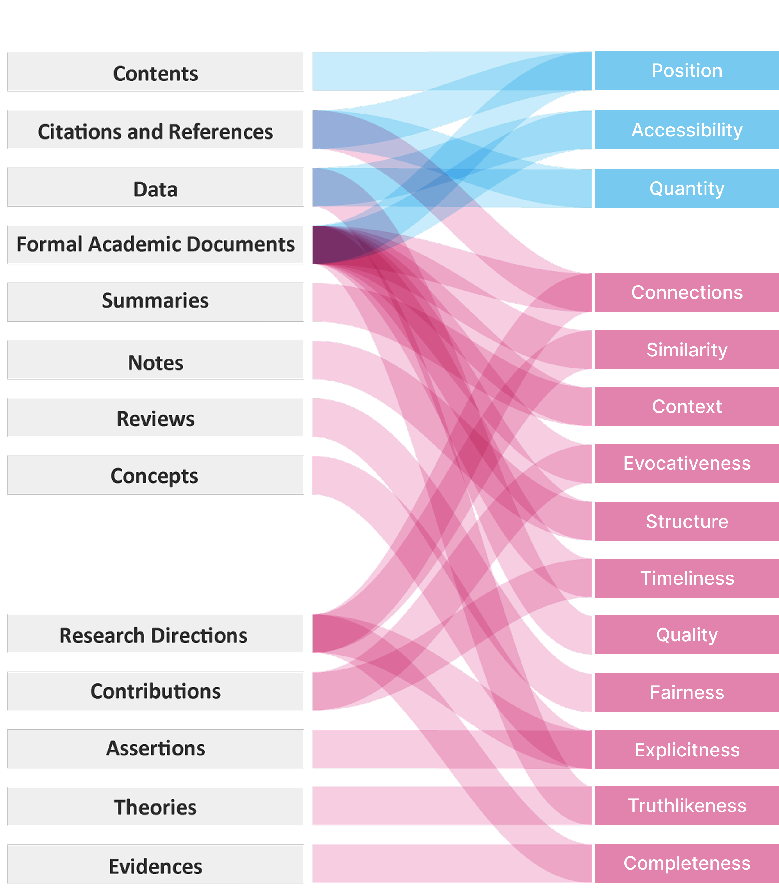
“The groundcolor of ripe apples is yellow, green, yellow-green or whitish yellow. The overcolor can be orange-red, pink-red, red, purple-red or brown-red.”
— Wikipedia, Apple
“In the orchards piles of red and of yellow apples shone in the sunlight, and when one still depended from the tree it was as bright as a gilt ball on a Christmas-tree.”
— Frank Bolles, At the North of Bearcamp Water
“The window panes reflected apples, reflected roses; all the leaves were green in the glass. If they moved in the drawing room, the apple only turned its yellow side.”
— Virginia Woolf, A Haunted House
“Early apples begin to be ripe about the first of August; but I think that none of them are so good to eat as some to smell.”
— Henry David Thoreau, Wild Apples
“The apple is a sturdy tree. Short of trunk and short of continuous limb, it is yet a stout and rugged object.”
— L. H. Bailey, The Apple-Tree
Same apple appears smooth to the touch, but variegated in color to the sight.
— Sextus Empiricus
Modalities determine how we sense.
A colorful image of an apple provides valuable information about its variety, ripeness, and the environment in which it is located.
Despite the absence of visual cues, haptic sensory information from our hand can intuitively provide an immediate assessment of the freshness of an apple based on its texture and firmness.
Plain text conveying the same information would increase the length of articulation and require extended cognitive effort to comprehend.
What alternative modality could enable us to “taste the sweetness” of science?
Researchers have proposed applications that translate quantitative and inherently geospatial information into modalities other than text.
Yet most of these alternative modalities remain limited when representing qualitative information that is difficult to quantify or not inherently geospatial, even as large language models make it possible to process qualitative information rapidly and at scale.
We identified that not all qualitative scholarly information is materialized in a stable format through a systematic literature review, and not all critical properties of scholarly information are tangible enough for researchers to sense directly.
[Click Here to See "Sense and Sense-ability" project][1] Zhu, S. and Chan, J. 2025. Sense and Sense-ability: Exploring Future Immersive Environments for Scholarly Sensemaking. Proceedings of the 2025 Conference on Creativity and Cognition, 886–901.
Structure describes relations between the internal elements of information objects.
Quality represents the strength of an information object.
How can we make an alternative modality for scholarly information beyond papers and text?
Research through design
I explored the design space in two completed phases. First, I used sketches, physical prototypes, and mixed reality experiments to investigate how scholarly information could take perceptible, manipulable forms. Second, I tested evolving prototypes with four HCI researchers and used their feedback to revise the design.
The formative sessions surfaced problems of interpretation as well as interaction: how to retain a statement’s meaning when breaking it into components, how to avoid overwhelming users with evidence, and how to let researchers formulate hypotheses in their own terms. These observations informed design decisions rather than claims of comparative effectiveness.
My role
Researcher and prototype designer: conceptual exploration, physical and immersive prototyping, formative study, and synthesis of design insights.
- Explore alternative representations
- Build and reflect on prototypes
- Test with researchers
- Translate observations into design decisions
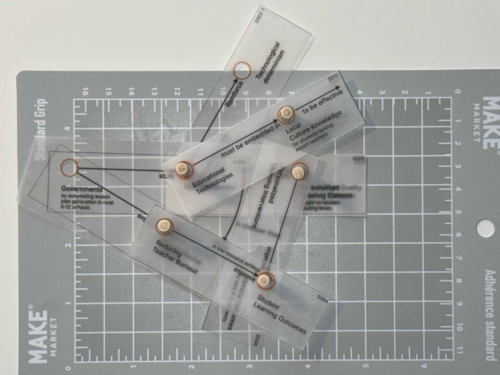
From familiar analogies to flexible structures
Information Garden imagined scholarly work as cultivation: source notes became roots, summaries became stems, and syntheses became fruit. Information Cake arranged a paper into layers, from its theoretical foundations to findings and discussion.
These familiar forms made relationships spatial, but also exposed constraints. Repeated garden forms could make distinct statements look alike. The cake’s layers privileged the organization of the source paper, making alternative relationships harder to explore. I shifted toward reusable units that researchers could connect and reorganize as their interpretations developed.
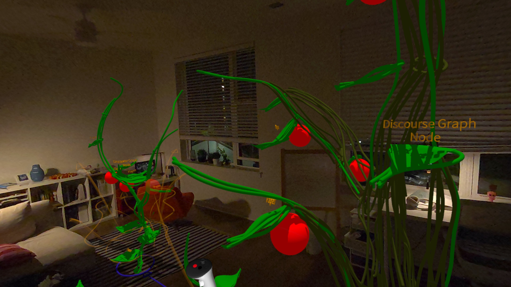
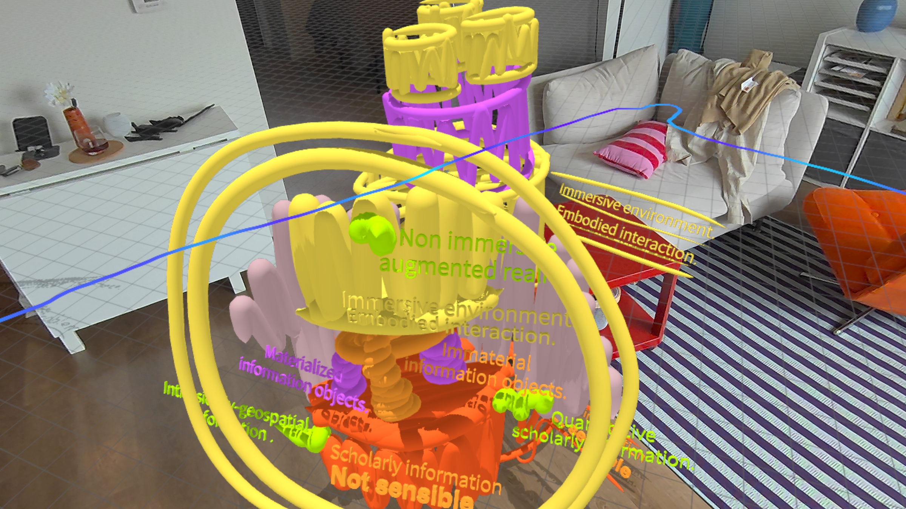
A reusable structure for scholarly statements
The next iterations moved from overlapping cards to modular physical statement units and then to an immersive prototype. Each experiment asked how a small unit of information could remain meaningful while becoming part of a larger synthesis.
The resulting representation, SenseEER, connects a start entity to a target entity through a directed relation. It gives a declarative statement a structure that the system can compare with other statements and that a researcher can manipulate. Shared entities allow statements to connect into larger networks.
Decomposition alone was not enough. The design needed to preserve access to the whole statement and its source context, so researchers could understand what they were moving and why it mattered.
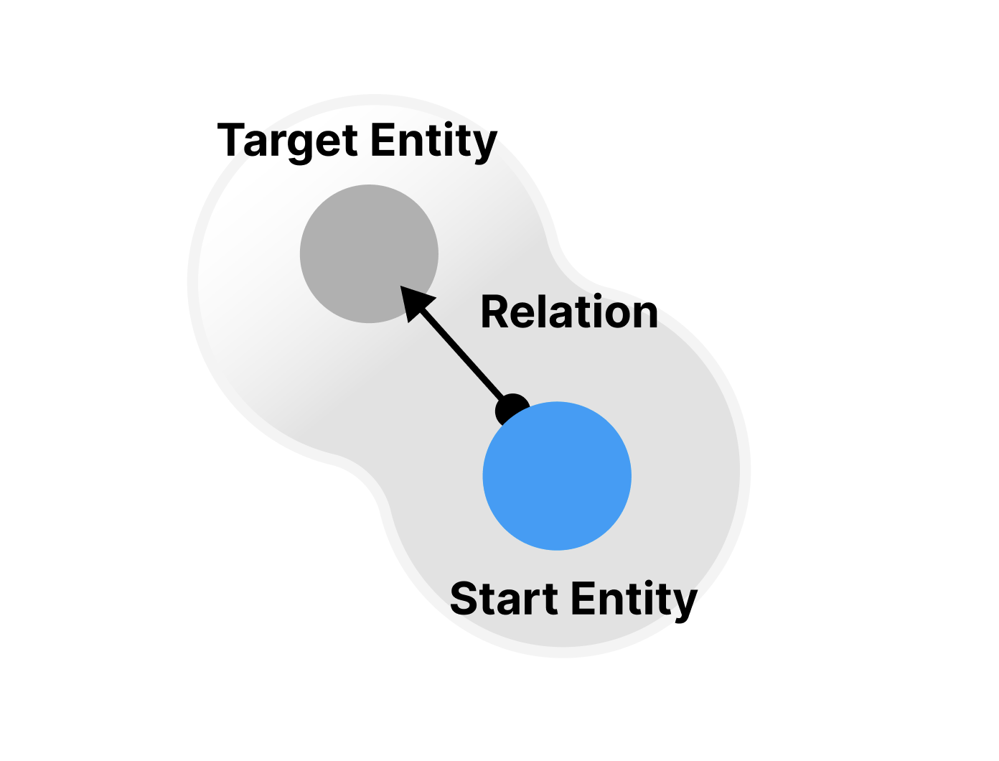
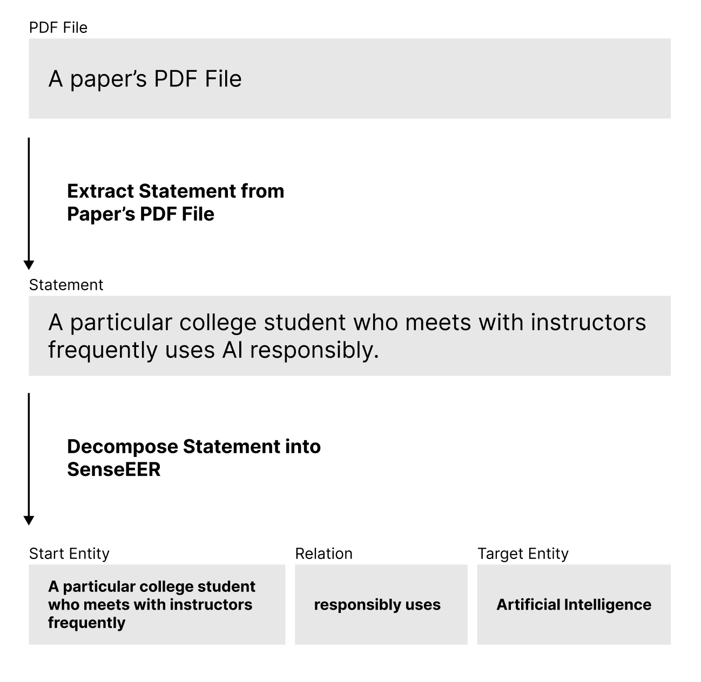
More design explorations
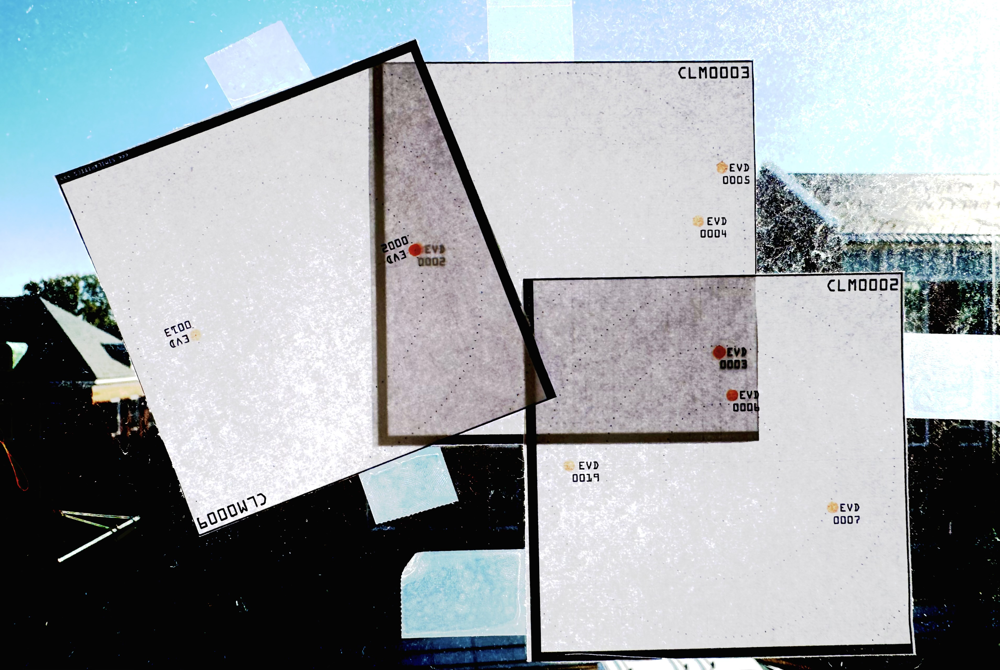
Making evidence relationships perceptible
I explored orientation, patina, and containment as ways to express relationships and properties through embodied interaction. Polarization oriented statements toward connected concepts. A patina-inspired experiment represented time and revisitation through color. Engulfing and expelling behaviors explored conceptual hierarchy and uncertainty.
These early effects were not retained as the final interaction workflow. They informed later mechanisms: polarization suggested evidence chaining, while oscillatory containment behaviors helped shape instability feedback.
In the resulting prototype, a hypothesis supported only through a longer qualifying evidence chain exhibits greater instability. A shorter chain produces less instability. The motion makes the computed indirectness of support noticeable so a researcher can inspect the evidence and reconsider the hypothesis. It is a cue for investigation, not a verdict on whether a claim is true.
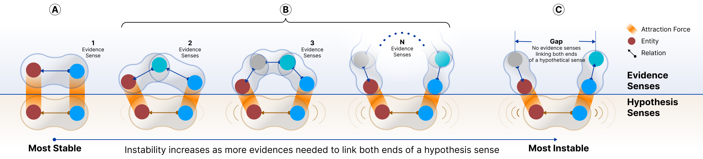
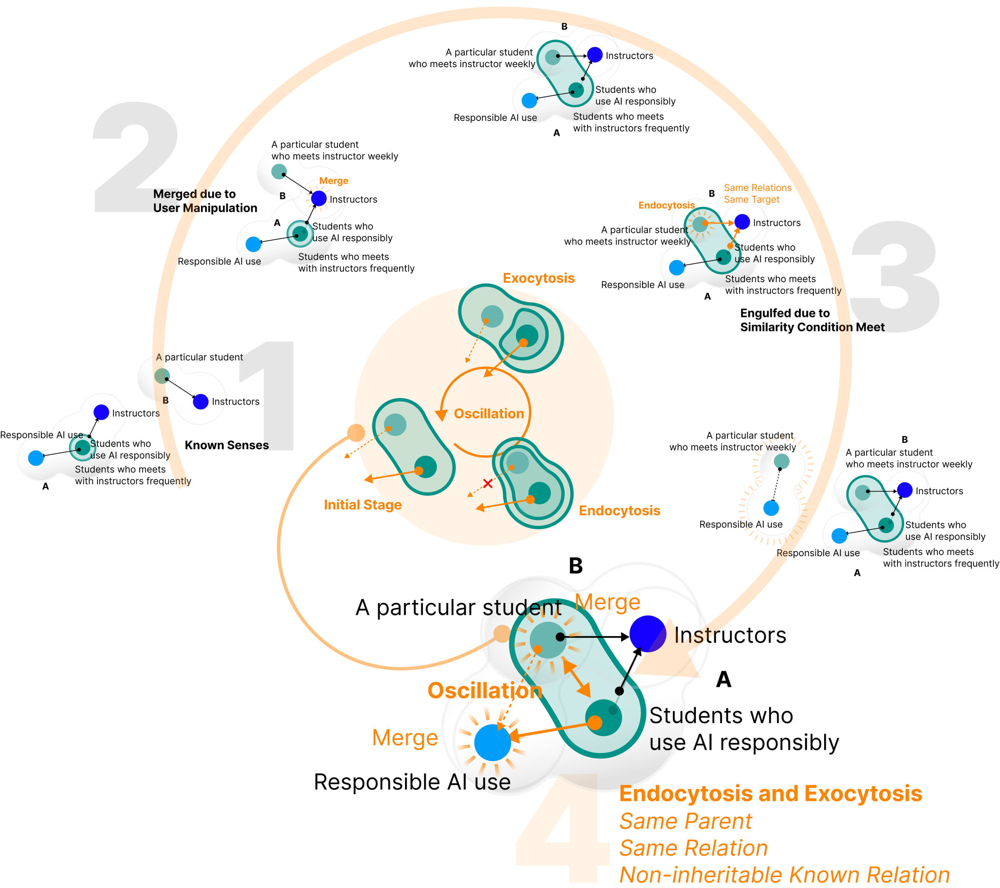
More design explorations
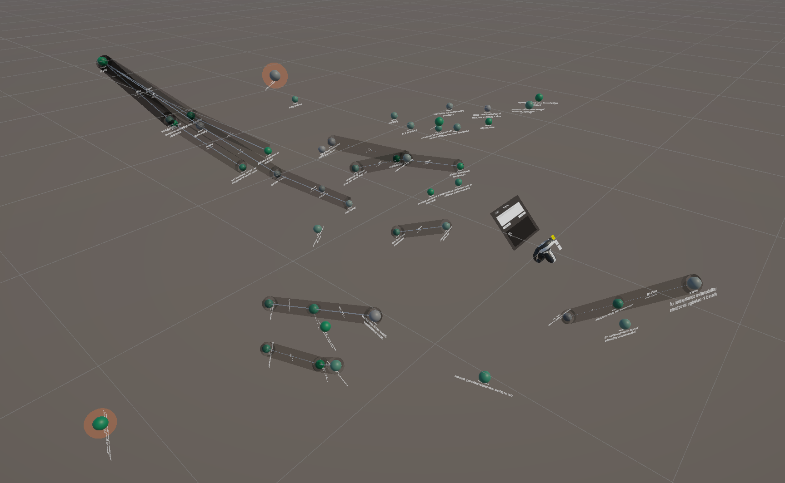
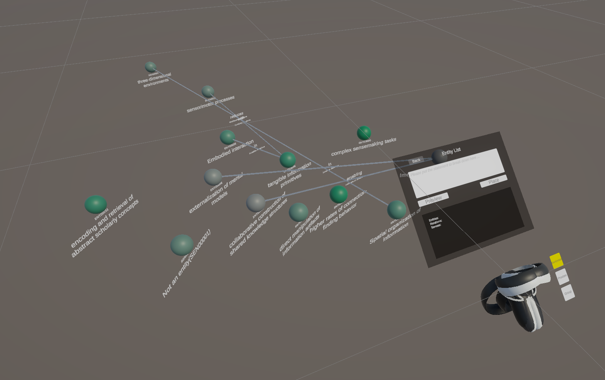
What changed through participant feedback
Four formative sessions revealed tensions that were difficult to see while designing alone. Participants differed in their familiarity with the dataset and in how they preferred to approach synthesis.
Some wanted to see whole statements rather than isolated components. Others valued distinct, graspable entities. Participants also needed definitions and source context, less information at the start, and the freedom to express a hypothesis beyond the vocabulary already present in the evidence.
These encounters led to an integrated statement view alongside decomposed components, a contextual information panel, a lighter starting workspace, and user-authored hypothetical entities. The design began to accommodate different entry points into sensemaking rather than requiring everyone to follow the same sequence.
- Whole statements alongside components — retain an integrated view while keeping entities available for manipulation.
- Context at hand — expose the source paper, original statement, definitions, and supporting quotations.
- Gradual evidence discovery — introduce relevant evidence around a hypothesis instead of loading everything at once.
- Room for researchers’ own language — allow hypothetical entities that are not limited to those extracted from existing evidence.
Build. Explore. Reconsider.
Users create hypothetical entities and draw connections between them with a controller. Each connection becomes a hypothesis SenseEER; a network of connected hypotheses represents a hypothetical theory. Related evidence can then appear around the hypothesis for inspection.
At different scales, researchers can examine entities, read integrated statements, and inspect larger arrangements. Contextual information remains available when a concept requires explanation. Researchers can also arrange statements spatially to support their own interpretation.
Embedding-based matching suggests relationships between entities. Intentional merging gives the researcher a way to calibrate a match when the model’s estimate does not reflect their understanding. Instability connects these computed relationships to perceptible motion, inviting further inspection and revision.
- Create entities and connect them into hypotheses.
- Inspect evidence and its source context.
- Use movement and spatial arrangement to notice relationships worth examining.
- Revise hypotheses, add evidence, or calibrate an entity match.
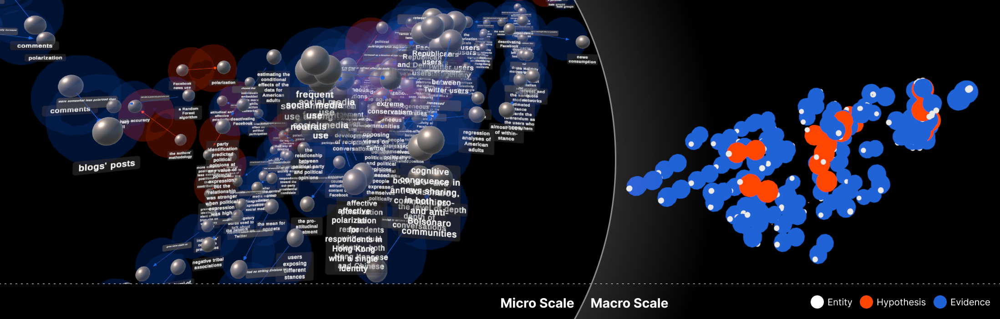
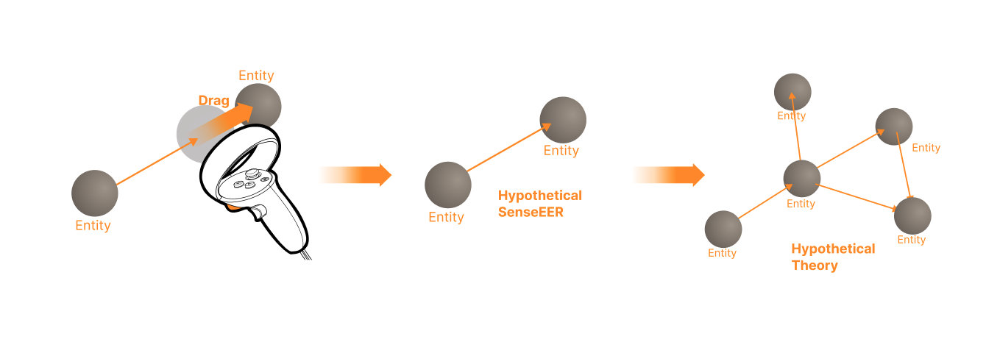
Design knowledge from the prototype
The project contributes three connected design ideas: reusable statement structures, a hypothesis–evidence interaction loop, and instability as perceptual feedback for computed support relationships.
The formative work suggests that making information sense-able requires more than turning text into objects. Researchers still need readable statements, source context, flexible entry points, and a responsive workspace. Motion must remain distinguishable from system lag, and objects should be steady enough to inspect and manipulate.
These are provisional design insights grounded in prototype development and four formative sessions. The next study will investigate how they hold up during sustained use in researchers’ own work.
Future work
The next phase is a proposed field study in which researchers use the prototype with literature relevant to their own ongoing projects. Multiple sessions will make it possible to examine resumption, changing hypotheses, and integration with everyday research practices.
A proposed companion web interface will support preparing evidence and reviewing synthesis reports between immersive sessions. A remote backend will preserve information spaces and support semantic processing beyond the headset’s local resources.
The study will combine pre-session surveys, post-session diaries, interviews, interaction logs, and session recordings. It will look for concrete episodes in which researchers notice a connection, revise a hypothesis, or develop an insight, tracing temporal and descriptive links to sense-able interactions.
The goal is to refine design guidance and understand use over time. The planned study does not directly measure the system’s effectiveness or establish that an interaction caused a research insight.
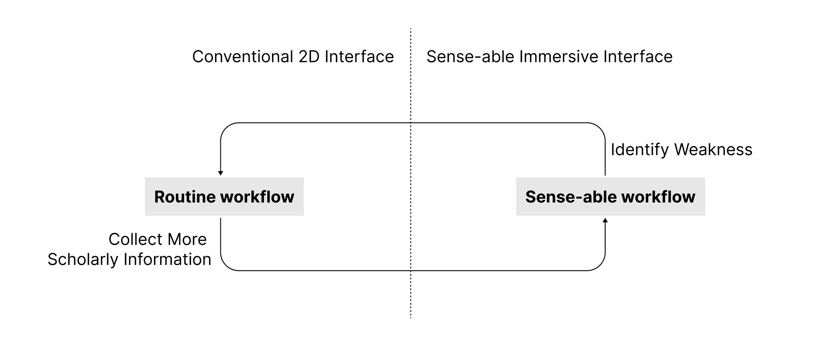
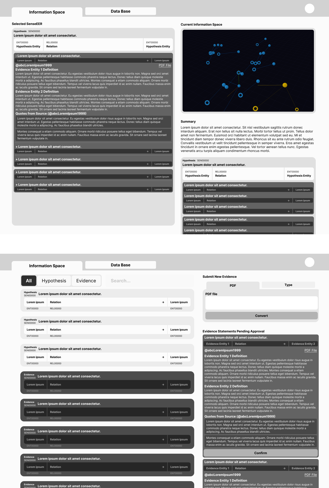